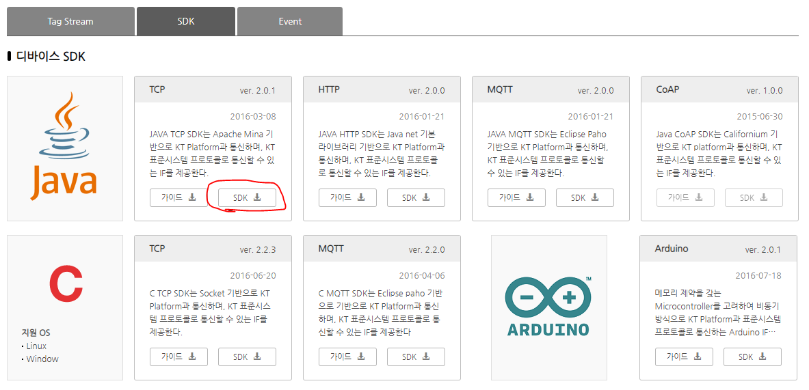

IoTMakers와 Java SDK로 Android APP 연동
목표
1. 위치정보를 주기적으로 알려주는 안드로이드 앱
1.1 안드로이드 앱 프로젝트 생성
- Android Studio에서 새로운 안드로이드 앱 프로젝트 (AndroidIoTMakersApp) 생성
현재 생성된 앱 프로젝트에서 사용할 SDK 버전을 29로 설정 (이 버전에서 안전하게 동작함을 보장하기 위함)
- build.gradle (Module:app) 파일 오픈하여 compileSdk 와 targetSdk를 29로 설정
android {
compileSdk 29
defaultConfig {
...
targetSdk 29
...
}
...
}
Google Play Services 라이브러리 추가
dependencies {
...
implementation 'com.google.android.gms:play-services-location:18.0.0'
}
툴바에서 Sync Project with Graddle File
또는 Sync Now
클릭
1.2 Android Manifest 파일에서 권한 설정
위치 접근에 필요한 권한 설정
<manifest ...>
...
<uses-permission android:name="android.permission.ACCESS_FINE_LOCATION"/>
...
</manifest>
1.3 activity_main.xml
<?xml version="1.0" encoding="utf-8"?>
<LinearLayout
xmlns:android="http://schemas.android.com/apk/res/android"
xmlns:tools="http://schemas.android.com/tools"
android:orientation="vertical"
android:layout_width="match_parent"
android:layout_height="match_parent"
tools:context=".MainActivity">
<Button
android:layout_width="match_parent"
android:layout_height="wrap_content"
android:text="Start location update"
android:id="@+id/device_button_start" />
<Button
android:layout_width="match_parent"
android:layout_height="wrap_content"
android:text="Stop location update"
android:id="@+id/device_button_stop" />
<Button
android:layout_width="match_parent"
android:layout_height="wrap_content"
android:text="Send location to IoTMakers"
android:id="@+id/device_button" />
<TextView
android:id="@+id/latitude_text"
android:layout_width="wrap_content"
android:layout_height="wrap_content"
android:layout_marginLeft="10dp"
android:layout_marginStart="10dp"
android:textSize="16sp" />
<TextView
android:id="@+id/longitude_text"
android:layout_width="wrap_content"
android:layout_height="wrap_content"
android:layout_marginLeft="10dp"
android:layout_marginStart="10dp"
android:textSize="16sp" />
<TextView
android:id="@+id/precision_text"
android:layout_width="wrap_content"
android:layout_height="wrap_content"
android:layout_marginLeft="10dp"
android:layout_marginStart="10dp"
android:textSize="16sp" />
</LinearLayout>
1.4 MainActivity.java
public class MainActivity extends AppCompatActivity {
private static final String TAG = MainActivity.class.getSimpleName();
private FusedLocationProviderClient mFusedLocationClient;
private Location mLastLocation;
private LocationCallback mLocationCallback;
final private int REQUEST_PERMISSIONS_FOR_LOCATION_UPDATES = 101;
@Override
protected void onCreate(Bundle savedInstanceState) {
super.onCreate(savedInstanceState);
setContentView(R.layout.activity_main);
mFusedLocationClient = LocationServices.getFusedLocationProviderClient(this);
Button start_location_update_button = (Button) findViewById(R.id.device_button_start);
start_location_update_button.setOnClickListener(new View.OnClickListener() {
@Override
public void onClick(View view) {
startLocationUpdates();
}
});
Button stop_location_update_button = (Button) findViewById(R.id.device_button_stop);
stop_location_update_button.setOnClickListener(new View.OnClickListener() {
@Override
public void onClick(View view) {
stopLocationUpdates();
}
});
}
private void startLocationUpdates() {
// 1. 위치 요청 (Location Request) 설정
LocationRequest locRequest = LocationRequest.create();
locRequest.setInterval(10000);
locRequest.setFastestInterval(5000);
locRequest.setPriority(LocationRequest.PRIORITY_HIGH_ACCURACY);
// 2. 위치 업데이트 콜백 정의
mLocationCallback = new LocationCallback() {
@Override
public void onLocationResult(LocationResult locationResult) {
super.onLocationResult(locationResult);
mLastLocation = locationResult.getLastLocation();
Log.d(TAG, "latitude : " + mLastLocation.getLatitude()+
", longitude : " + mLastLocation.getLongitude());
updateUI();
}
};
// 3. 위치 접근에 필요한 권한 검사
if (ActivityCompat.checkSelfPermission(this, Manifest.permission.ACCESS_FINE_LOCATION) !=
PackageManager.PERMISSION_GRANTED) {
ActivityCompat.requestPermissions(
MainActivity.this, // MainActivity 액티비티의 객체 인스턴스를 나타냄
new String[]{Manifest.permission.ACCESS_FINE_LOCATION}, // 요청할 권한 목록을 설정한 String 배열
REQUEST_PERMISSIONS_FOR_LOCATION_UPDATES // 사용자 정의 int 상수. 권한 요청 결과를 받을 때
);
return;
}
// 4. 위치 업데이트 요청
mFusedLocationClient.requestLocationUpdates(locRequest,
mLocationCallback,
null /* Looper */);
}
@Override
public void onRequestPermissionsResult(
int requestCode,
String[] permissions,
int[] grantResults) {
switch (requestCode) {
case REQUEST_PERMISSIONS_FOR_LOCATION_UPDATES: {
if (grantResults.length > 0
&& grantResults[0] == PackageManager.PERMISSION_GRANTED) {
startLocationUpdates();
} else {
Toast.makeText(this, "Permission required", Toast.LENGTH_SHORT);
}
}
}
}
public void stopLocationUpdates() {
mFusedLocationClient.removeLocationUpdates(mLocationCallback);
}
private void updateUI() {
double latitude = 0.0;
double longitude = 0.0;
float precision = 0.0f;
TextView latitudeTextView = (TextView) findViewById(R.id.latitude_text);
TextView longitudeTextView = (TextView) findViewById(R.id.longitude_text);
TextView precisionTextView = (TextView) findViewById(R.id.precision_text);
if (mLastLocation != null) {
latitude = mLastLocation.getLatitude();
longitude = mLastLocation.getLongitude();
precision = mLastLocation.getAccuracy();
}
latitudeTextView.setText("Latitude: " + latitude);
longitudeTextView.setText("Longitude: " + longitude);
precisionTextView.setText("Precision: " + precision);
}
}
1.5 위치 업데이트 기능 확인
2. Java SDK(TCP)를 사용하여 IoTMakers와 안드로이드 앱 연동하기
2.1 디바이스 등록
IoTMakers에 접속해서 디바이스를 등록 해 보자.

- 디바이스 명을 입력하고 프로토콜 유형은 플랫폼 표준으로 선택한다.
- 디바이스 명과 아이디, 패스워드는 수정이 가능하다. 디바이스 등록 버튼을 클릭하면 간단하게 디바이스가 등록된다.
- 디바이스가 등록되면 나의 디바이스 목록에서 등록된 디바이스를 확인할 수 있다

- 디바이스 목록에서 등록된 디바이스를 클릭하면 다음과 같이 디바이스 상세정보를 확인할 수 있다.
이미지와 위치는 처음 입력 시에 입력하거나 수정을 통해 입력할 수 있다.

센서 등록을 위해서 태그 스트림 생성버튼을 클릭하여 아래와 같이 태그 스트림을 생성하자. 처음엔 다음과 같은 화면이 보인다. 태그 스트림 생성 버튼을 클릭하여 ID와 UNIT을 입력한다.

- 위치센서의 데이터 수집을 위해 latitude라는 센서를 수집, 숫자 타입으로 생성

- longitude도 동일한 타입으로 생성한다.

2.2 Android 앱에 Java SDK 설정
Android Studio에서 JAVA SDK를 이용하여 IoTMakers에 연결 할 Android 앱을 만들어 보자.
디바이스와 센서 등록이 모두 끝났으니 이제 JAVA SDK를 다운받아 보자.

다운로드한 JAVA SDK의 dist 폴더와 lib 폴더 안의 모든 jar파일을 Android Studio 프로젝트의 libs 폴더에 복사한 후에, app 모듈 하위의 build.gradle을 열어서, dependencies 부분에 아래와 같이 libs 폴더 하위의 .jar 파일을 추가한다.
dependencies {
...
implementation files('libs\\JAVA_TCP_SDK_2.0.1.jar')
implementation files('libs\\commons-lang-2.6.jar')
implementation files('libs\\commons-lang3-3.1.jar')
implementation files('libs\\mina-core-2.0.7.jar')
implementation files('libs\\mina-integration-beans-2.0.7.jar')
implementation files('libs\\slf4j-api-1.7.4.jar')
implementation files('libs\\log4j-1.2.15.jar')
implementation files('libs\\gson-2.2.1.jar')
implementation files('libs\\jackson-core-asl-1.9.12.jar')
implementation files('libs\\jackson-mapper-asl-1.9.12.jar')
implementation files('libs\\IoTSecuritySDK.jar')
...
}

의존성 라이브러리 내 중복 파일이 빌드되는 것을 막기 위해 build.gradle 파일에 다음 스크립트를 아래 그림과 같이 추가하자.
packagingOptions {
pickFirst 'META-INF/LICENSE'
pickFirst 'META-INF/LICENSE.txt'
pickFirst 'META-INF/DEPENDENCIES'
pickFirst 'META-INF/NOTICE'
pickFirst 'META-INF/NOTICE.txt'
pickFirst 'META-INF/ASL2.0'
}

2.3 Android Manifest 파일에서 권한 설정
인터넷 연결에 필요한 권한 설정
<manifest ...>
...
<uses-permission android:name="android.permission.INTERNET"/>
...
</manifest>
2.4 DeviceTask.java
IoTMakers 와 안드로이드 앱을 디바이스 용도로 연동하기 위해서 다음과 같이 AsyncTask를 상속받은 클래스를 만들고, Task를 실행 했을 때 TcpConnector를 통해 데이터를 전송하기 위해 doInBackground 메소드에 아래와 같은 IoTMakers의 디바이스 정보를 업데이트 한다.
// 디바이스상세정보-> Gateway 연결 ID를 입력한다.
info.setExtrSysId("OPEN_TCP_001PTL001_xxxxxxxxx");
// 디바이스상세정보-> 디바이스 아이디를 입력한다.
info.setDeviceId("yourdeviceidentification");
// 디바이스상세정보-> 디바이스 패스워드를 입력한다.
info.setPassword("xxxxxxxxx");
public class DeviceTask extends AsyncTask<Void, Void, Void> {
private static final String TAG = DeviceTask.class.getSimpleName();
private Map<String, Double> rows = new HashMap<String, Double>();
public DeviceTask(Map<String, Double> rows) {
this.rows = rows;
}
@Override
protected void onPreExecute() {
super.onPreExecute();
}
@Override
protected Void doInBackground(Void... params) {
// IoTMakers 연동 설정 정보
BaseInfo info = new BaseInfo();
// 접속 IP, Port 설정
info.setIp("220.90.216.90");
info.setPort(10020);
// 디바이스상세정보-> Gateway 연결 ID를 입력한다.
info.setExtrSysId("OPEN_TCP_001PTL001_xxxxxxxxx");
// 디바이스상세정보-> 디바이스 아이디를 입력한다.
info.setDeviceId("yourdeviceidentification");
// 디바이스상세정보-> 디바이스 패스워드를 입력한다.
info.setPassword("xxxxxxxxx");
// IoTMakers 연동 TCP Connector 생성
IMTcpConnector connector = new IMTcpConnector();
try {
connector.activate(new LogIf(), info, (long) 3000);
long transId = IMUtil.getTransactionLongRoundKey4();
Log.d(TAG, rows.toString());
// 계측 데이터 HashMap 객체로 전송한다. key는 센싱태그 명 value는 계측값을 넣는다.
connector.requestNumColecDatas(rows, new Date(), transId);
connector.deactivate();;
} catch (SdkException e) {
e.printStackTrace();
}
return null;
}
@Override
protected void onPostExecute(Void aVoid) {
super.onPostExecute(aVoid);
}
}
2.5 MainActivity.java 수정
public class MainActivity extends AppCompatActivity {
//...
private Map<String, Double> rows = new HashMap<String, Double>();
private DeviceTask deviceTask;
@Override
protected void onCreate(Bundle savedInstanceState) {
// ... 이전코드와 동일
// Location 정보를 IoTMaker에 전송하기 위한 버튼
Button send_location_button = (Button) findViewById(R.id.device_button);
send_location_button.setOnClickListener(new View.OnClickListener() {
@Override
public void onClick(View view) {
startDeviceTask();
}
});
}
private void startDeviceTask() {
deviceTask = new DeviceTask(rows);
deviceTask.execute();
}
private void startLocationUpdates() {
// ...
mLocationCallback = new LocationCallback() {
@Override
public void onLocationResult(LocationResult locationResult) {
super.onLocationResult(locationResult);
mLastLocation = locationResult.getLastLocation();
// ********** 추가 되는 부분 *************************
// 새로운 위치가 변경될 때마다, rows Map 객체에 위도, 경도 저장
rows.put("latitude", mLastLocation.getLatitude());
rows.put("longitude", mLastLocation.getLongitude());
// ********** 추가 되는 부분 *************************
}
};
}
2.6 IoTMakers 연동 확인
IoTMakers 디바이스 상세정보 화면에서 아래와 같이 안드로이드 앱으로부터 수집된 위치 정보를 텍스트, Json 로그나 차트로 실시간으로 확인할 수 있다.

IoTMakers 포탈의 나의 대시보드화면에서 위젯을 추가할 수 있다.
위젯 중에서 실시간 이동체 위치 위젯을 선택해 보자.

실시간 이동체 위치 위젯의 설정버튼을 클릭하면 다음과 같이 디바이스와 센서를 선택할 수 있다.
등록한 안드로이드 디바이스를 선택하고, 위도에는 태그스트림 latitude를 경도에는 태그스트림 longitude를 선택하고 저장한다.

설정이 완료되면 아래와 같이 수집된 위치 정보를 기반으로 지도에 위치 좌표가 표시된 화면을 볼 수 있다

3. 안드로이드 디바이스의 다양한 센서 추가 실습
- 안드로이드 디바이스는 다양한 종류의 센서를 가지고 있다. 위치 정보 뿐만 아니라 다양한 종류의 센서 정보를 측정하여 IoTMakers로 연동해 보자.
예시로 Gyroscope 센서를 이용해서 연동해보겠다.
이전에 위치 정보 송신 시 태그스트림을 등록 했던 것 처럼 Gyroscope 태그 스트림도 다음과 같이 등록하자.

AndroidManifest.xml 파일에는 센서 사용관련 권한을 추가한다.
<uses-feature android:name="android.hardware.sensor.gyroscope" android:required="true" />
MainActivity 클래스에는 다음과 같이 코드를 추가한다.
public class MainActivity extends AppCompatActivity implements SensorEventListener {
private SensorManager sensorManager;
private Sensor gyroSensor;
//...
@Override
protected void onCreate(Bundle savedInstanceState) {
//...
sensorManager = (SensorManager) getSystemService(Context.SENSOR_SERVICE);
gyroSensor = sensorManager.getDefaultSensor(Sensor.TYPE_GYROSCOPE);
// 센서 정보 계측 시 리스너를 등록한다.
sensorManager.registerListener(this, gyroSensor, SensorManager.SENSOR_DELAY_NORMAL);
}
@Override
protected void onDestroy() {
// 화면 종료 시 리스너를 해제한다.
if (sensorManager != null) {
sensorManager.unregisterListener(this);
}
super.onDestroy();
}
@Override
public void onSensorChanged(SensorEvent event) {
// 센서 값 계측 시 송신 할 HashMap 객체에 값을 넣는다.
rows.put("gyrox", (double) event.values[0]);
rows.put("gyroy", (double) event.values[1]);
rows.put("gyroz", (double) event.values[2]);
Log.d(TAG,"gyrox=" + event.values[0] + ", gyroy="+ event.values[1] + ", gyroz="+event.values[2]);
}
@Override
public void onAccuracyChanged(Sensor sensor, int accuracy) {
}
}
아래와 같이 추가된 센서에서 계측 된 값을 확인 하시오.

참고자료